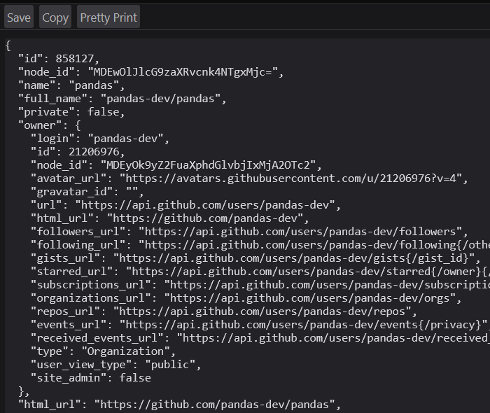

24 HTTP and Web APIs
Prerequisites (read first if unfamiliar): Chapter 14, Chapter 17.
See also: Chapter 20, Chapter 34, Chapter 7.
Purpose
You found the perfect data for your term project, and it lives behind an API. You paste one of its URLs into your browser, data comes back, and the hard part seems over. So you write a loop over 3,000 IDs, start it, and go to dinner. When you come back, the notebook is stuck on item 1,412. Or it crashed with KeyError: 'results', because response 1,413 wasn’t data at all but a message saying you’d made too many requests.
If that’s happened to you, you’re in good company. Almost everyone’s first data-collection script works for ten requests and falls over somewhere in the next thousand. Networks are unreliable, servers get busy, and the people who run them set rules about how fast you may ask, and none of that shows up when you test one URL in a browser.
This chapter covers what an HTTP request is, how to poke at an API with curl, how to write the Python version with requests, how to turn the JSON that comes back into a DataFrame, and how to handle keys, errors, rate limits, and pages of results. It won’t make you a backend engineer, and it doesn’t cover scraping pages that were never meant to be data (the companion book Web Data Science goes much further into both). It will get you from “I can only use the datasets I’m handed” to “I can go and get the data I need.”
Why read this chapter
- Your script has been stuck on the same line for twenty minutes, and you can’t tell whether it’s working, waiting, or frozen forever.
resp.json()raisedJSONDecodeError: Expecting value: line 1 column 1 (char 0), even though the URL showed perfectly good data in your browser.- An API answered
401,403, or429, and you don’t know whether the problem is your key, your code, or that you’re being told to slow down. - The API’s documentation only shows
curlcommands, and you’d like to read them and turn them into Python. - The JSON came back nested three levels deep, and
pd.DataFrame(...)gave you a column full of dictionaries. - You asked for every issue in a repository and got exactly 30, with no error and no hint about where the rest went.
- You need to put an API key somewhere, and you’ve heard the stories about keys that ended up on GitHub.
Running theme: the network is slow, broken, and rude, so plan for it
Every request can hang, fail, get rate-limited, or come back as something other than what you asked for. Code that expects this, with timeouts, status checks, and polite retries, finishes the job; code that doesn’t crashes halfway through a ten-minute loop.
24.1 What happens when you fetch a URL
The idea underneath every tool in this chapter is small, and many confusing errors make sense once you see it. The web runs on HTTP, a conversation with two turns. A client (your browser, a Python script, curl) sends a request to a server: a method saying what you want, such as GET; a URL saying which thing you mean, such as https://api.github.com/repos/pandas-dev/pandas; headers, short lines of metadata (“I’m a script called my-term-project,” “here’s my key”); and sometimes a body with data in it. The server sends back a response: a three-digit status code saying how it went, headers of its own, and a body, usually HTML for a person, JSON for a program, or the bytes of a file.
“API” (application programming interface) means a dozen things in computing, which is part of why it’s confusing. Here it means a web API: URLs a service publishes on purpose for programs, which return data instead of pages. Each such URL is an endpoint. Many follow a loose style called REST, which mostly means each URL names a thing (a repository, a weather station) and the method says what to do with it.
Methods: what you want to do
HTTP has a handful of methods, also called verbs. These four are the ones you’ll meet:
| Method | What it asks for |
|---|---|
GET |
“Give me this resource.” Fetching data. |
POST |
“Here’s something new.” Creating or submitting data. |
PUT |
“Replace this with that.” Updating a resource. |
DELETE |
“Get rid of this.” |
Collecting data, you’ll use GET almost every time, and POST for the occasional API that wants a search query in the body instead of the URL.
Status codes: how it went
When something goes wrong, the status code is the first thing to look at, and its first digit does most of the work:
| Range | Meaning |
|---|---|
| 1xx | Informational; you’ll rarely see these. |
| 2xx | Success. 200 OK is the usual “all good.” |
| 3xx | Redirect: the thing moved. requests follows these for you. |
| 4xx | Something about your request: a bad URL, a missing key, too many requests. |
| 5xx | Something on the server’s end: it broke, or it’s overloaded. |
The useful split: retrying a 4xx won’t help until you change something, while a 5xx often clears up if you wait. Six codes cover most of what you’ll see:
- 200 OK: it worked.
- 401 Unauthorized: your credentials are missing or wrong. Despite the name, it means “unauthenticated”: the server doesn’t know who you are.
- 403 Forbidden: the server knows who you are and still won’t let you. Some APIs, GitHub among them, also send 403 when you’ve used up your allowance.
- 404 Not Found: the URL is wrong, or the thing doesn’t exist (or isn’t visible to you).
- 429 Too Many Requests: you’re being rate-limited. Slow down.
- 500 Internal Server Error: the server broke. Not your fault; try again later.
24.2 Quick fetches with curl and wget
Before you write any Python, the fastest way to see whether an API works, and what it sends back, is to ask it from the command line with curl or wget. It’s also how you rule out your own code when an API misbehaves.
curl comes with macOS, most Linux systems, and Windows 10 and 11, with one trap: in Windows PowerShell, curl can run a different command, Invoke-WebRequest, which understands none of the options below. Type curl.exe to get the real thing. wget is standard on Linux but usually has to be installed on macOS and Windows.
curl for looking around
curl with just a URL sends a GET request and prints the response body:
curl https://api.github.com/repos/pandas-dev/pandasPaste the same URL into a browser and you get the same response, often formatted for reading (Figure 24.1). Either way, it’s plain JSON: keys and values, with objects such as owner nested inside, and many URLs that point at further API requests you could make.

curl prints, laid out with one key per line; owner is an object of its own, and the long URLs are links to further API requests. Cropped to the top-left corner of the response.
The body is only half the response, and when something goes wrong the answer is usually in the other half. The flag to learn first is -i, which prints the status line and headers above the body. To practice on errors without bothering a real service, use httpbin.org, a testing site whose URLs answer however you ask: /status/429 returns a 429, /delay/5 waits five seconds. Here’s a real 429 from September 2026:
$ curl -i https://httpbin.org/status/429
HTTP/2 429
date: Fri, 25 Sep 2026 18:48:23 GMT
content-type: text/html; charset=utf-8
content-length: 0
server: gunicorn/19.9.0
access-control-allow-origin: *
access-control-allow-credentials: trueWithout -i, that command prints nothing at all, the kind of silence that makes an API feel haunted. With it, the problem is on the first line. Try curl -i on the GitHub URL and you’ll find x-ratelimit-limit: 60 and x-ratelimit-remaining among the headers: without a key, GitHub allows 60 requests an hour, and it’s telling you how many you have left.
A few more flags cover most of what API documentation shows. -H 'Name: value' adds a header. -d '...' sends a body, and makes the request a POST on its own, so the -X POST you’ll often see beside it is harmless but redundant (-X sets the method). -o filename saves the body to a file. Here they are, sent to httpbin’s /post, which echoes back what it received, piped into jq, a small tool for pulling pieces out of JSON:
curl -s https://httpbin.org/post \
-H "Authorization: Bearer $API_TOKEN" \
-H "Content-Type: application/json" \
-d '{"name": "widget", "qty": 12}' | jq '.headers.Authorization'If API_TOKEN isn’t set, that prints "Bearer" and nothing more: the shell quietly replaced the missing variable with nothing, and the server got a header with no token. That’s how a lot of mysterious 401s happen. (Keys belong in environment variables like this one, never typed into commands; see Chapter 34.)
Two more flags matter once curl is in a script. -s hides the progress meter, which curl prints whenever its output goes into a pipe or a file. -f makes it fail on a 4xx or 5xx. Without -f, curl -o data.json on a missing page saves the error page as data.json and reports success; with it, you get curl: (22) The requested URL returned error: 404 and a nonzero exit code your script can check.
wget for downloading
Where curl is built for poking at APIs, wget is built for “get this file onto my disk, even over a flaky network.” wget -c <url> resumes a partial download instead of starting again from byte zero, which for a multi-gigabyte dataset is the difference between babysitting it all night and leaving it running (and wget retries most failures up to 20 times on its own).
wget -r <url> downloads recursively, following links five levels deep by default. It’s handy for archiving a small site you have permission to copy, and it’s exactly how people get blocked: one command can send thousands of requests at a server that never expected them. wget respects a site’s robots.txt when it recurses (see “Rate limits and being polite”), but that’s the floor. Don’t point wget -r at a site you don’t own without reading its rules first.
wget https://example.com/dataset.csv # save as dataset.csv
wget -O sales.csv https://example.com/data.csv # save under a name you choose
wget -c https://example.com/big-file.zip # resume if interruptedWhich tool when
Use curl when you’re exploring an endpoint, a key, or a header; wget when you’re downloading a file and want resuming and retries for free; and requests when you’re writing code that fetches data as one step of an analysis. Since many APIs use curl commands as their documentation examples, reading -H and -d at a glance also lets you translate those examples into Python without guessing.
24.3 Fetching data in Python with requests
requests is the library nearly everyone uses for HTTP in Python. It isn’t in the standard library, so install it into your environment (see Chapter 14):
python -m pip install requestsThe simplest use is three lines:
import requests
resp = requests.get("https://api.github.com/repos/pandas-dev/pandas", timeout=10)
print(resp.status_code)
print(resp.json()["stargazers_count"])resp holds everything the server sent. resp.status_code is the code, and resp.headers the headers (capitalization doesn’t matter: resp.headers["content-type"] works too). For the body, resp.json() parses JSON into dictionaries and lists, resp.text gives a string, and resp.content gives raw bytes, for images and zip files.
It hangs forever: you left out timeout=; add timeout=10 to every call. It comes back 401 or 403: your key is missing, wrong, or in the wrong place. Check the API’s documentation for where it goes (often an Authorization: Bearer <key> header, sometimes X-API-Key or a URL parameter), and check that it loaded from your .env file (see Chapter 34). It comes back 429: you’re being rate-limited; sleep between requests, and look for a Retry-After header. resp.json() raises JSONDecodeError: the body isn’t JSON, so print resp.text[:500] to see what it is.
For any 4xx, print resp.text first. Servers almost always explain in the body what they didn’t like.
Query parameters
Many endpoints take options in the URL’s query string, after the ?. It’s tempting to build that string with an f-string. Don’t: the moment a value contains a space or an &, the URL breaks in ways that are hard to spot. Pass a dictionary as params= and requests builds it, percent-encoding every character correctly:
resp = requests.get(
"https://httpbin.org/get",
params={"q": "data science & ethics", "limit": 50},
timeout=10,
)
print(resp.url)https://httpbin.org/get?q=data+science+%26+ethics&limit=50Built by hand, that & would have split one search term into two parameters.
Headers
The two headers you’ll set most are Authorization, which carries a key (see “API keys and secrets”), and User-Agent, which names your program. User-Agent looks like a formality, and isn’t. Left alone, requests calls itself python-requests/2.34.2 (or your version), which tells a server’s operators nothing about you. GitHub requires a valid one, and Wikimedia’s User-Agent policy warns that scripts without an informative one “may be blocked without notice.” So send one, with a way to reach you:
headers = {
"User-Agent": "my-term-project/0.1 (contact: you@example.edu)",
"Accept": "application/json",
}
resp = requests.get("https://httpbin.org/headers", headers=headers, timeout=10)
print(resp.json()["headers"]["User-Agent"])my-term-project/0.1 (contact: you@example.edu)httpbin’s /headers echoes back what it received, which shows you what your code really sends.
Sending data with POST
When an API wants data in the body, pass a dictionary as json=, which turns it into JSON and sets Content-Type: application/json for you:
resp = requests.post(
"https://httpbin.org/post",
json={"name": "Alice", "email": "alice@example.com"},
timeout=10,
)Older examples use data=, which sends fields the way an HTML form does; modern APIs rarely want that.
Timeouts are not optional
This is the fix for the script stuck on one line. By default, requests never times out: if a server accepts your connection and goes quiet, your program waits forever, without a word. So pass a timeout every time:
resp = requests.get(url, timeout=10) # give up if the server goes quiet for 10 secondsNow a silent server raises an exception you can catch. Here’s a real one, from asking httpbin to wait five seconds while allowing two:
requests.exceptions.ReadTimeout: HTTPSConnectionPool(host='httpbin.org', port=443): Read timed out. (read timeout=2)The timeout isn’t a limit on the whole download, which surprises people: it’s how long to wait with nothing arriving. Ten seconds suits most APIs; one that builds a large export before answering may need more.
24.4 Checking the response
Here’s what catches nearly everyone: requests does not raise an error when the server says no. To requests, a 404 is a perfectly good response, so your code carries on, and the failure surfaces three lines later as a confusing KeyError about data that was never there. You have to check.
The quickest check is raise_for_status(), which does nothing on success and raises an HTTPError on any 4xx or 5xx, with a message naming the code and URL (404 Client Error: NOT FOUND for url: https://httpbin.org/status/404):
resp = requests.get(url, timeout=10)
resp.raise_for_status()
data = resp.json()When different failures need different handling, such as retrying a 429 but giving up on a 404, check the code yourself:
resp = requests.get(url, timeout=10)
if resp.status_code == 429:
... # wait, then try again (see "Rate limits and being polite")
elif not resp.ok:
raise RuntimeError(f"API returned {resp.status_code}: {resp.text[:200]}")resp.ok is true for any code below 400, which is safer than testing status_code != 200: a POST that creates something often returns 201 Created, and that’s success too.
Then check the body. JSONDecodeError: Expecting value: line 1 column 1 (char 0) sounds like subtly broken JSON, and it almost never is. “Line 1, column 1” means the very first character wasn’t JSON: the server sent something else, usually an HTML page (a login screen, an error page) or nothing at all. Look before you parse: print(resp.status_code, resp.text[:300]).
24.5 From JSON to a DataFrame
JSON maps neatly onto Python (objects become dictionaries, arrays become lists), but APIs rarely hand you a table. They wrap the rows in an envelope and nest objects inside each row. Here’s a made-up response shaped like many real ones:
import pandas as pd
payload = {
"total_count": 2,
"results": [
{"id": 101, "title": "Fix dates", "user": {"login": "maria", "id": 7},
"labels": [{"name": "bug"}, {"name": "dates"}]},
{"id": 102, "title": "Add README", "user": {"login": "sam", "id": 9},
"labels": []},
],
}pd.DataFrame(payload) gives something strange: a total_count column and a results column where each cell is a whole record. The rows you want are one level down, so point pandas at the list:
df = pd.DataFrame(payload["results"])
df[["id", "user"]] id user
0 101 {'login': 'maria', 'id': 7}
1 102 {'login': 'sam', 'id': 9}Closer, but you can’t sort, filter, or group by a column of dictionaries. pd.json_normalize flattens nested objects into their own columns, joining the names with dots:
pd.json_normalize(payload["results"]) id title labels user.login user.id
0 101 Fix dates [{'name': 'bug'}, {'name': 'dates'}] maria 7
1 102 Add README [] sam 9Nested lists, like labels, stay as lists, since an issue can have any number of labels. When the list is what you care about, make it the rows with record_path=, and carry fields from the outer record along with meta=:
pd.json_normalize(payload["results"], record_path="labels", meta=["id", "title"]) name id title
0 bug 101 Fix dates
1 dates 101 Fix datesEach row is now one label on one issue, the tidy shape Chapter 21 recommends. Issue 102 has vanished, because it had no labels to make rows from: right for a table of labels, but worth knowing before you count anything. Chapter 20 has more on JSON as a file format.
The habit that saves the most time: the first few times you call a new API, print payload.keys() and one record before writing code for it.
24.6 API keys and secrets
Most useful APIs want to know who’s asking, so they give you an API key (or a token, which works the same way here) to send with every request. Wherever it goes, the key must not live in your code. A key typed into a notebook ends up in a commit, and commits end up on GitHub, where automated scanners look for exactly that. Keep it in an environment variable instead, and read it with os.environ:
import os
import requests
api_key = os.environ["OPENWEATHER_API_KEY"] # a KeyError here means it isn't set
resp = requests.get(
"https://api.openweathermap.org/data/2.5/weather",
params={"q": "Boulder,US", "appid": api_key},
timeout=10,
)The square brackets are deliberate. If the variable isn’t set, the script stops right there with KeyError: 'OPENWEATHER_API_KEY', naming the problem. The softer os.environ.get(...) would hand you None, and you’d find out later from a 401 (from OpenWeather, "Invalid API key").
One trap comes with APIs like this one that take the key in the URL: raise_for_status() prints the full URL, key included (401 Client Error: Unauthorized for url: https://api.openweathermap.org/data/2.5/weather?q=Boulder%2CUS&appid=not-a-real-key). In a notebook, that message is saved in the cell’s output, and the output is saved in the file you commit. Clear outputs before committing a notebook that talks to an API (Chapter 16 shows how).
In practice, keep keys in a .env file that git ignores and load it with python-dotenv; there’s a template at the end of this chapter, and Chapter 34 covers the whole workflow, including what to do if a key leaks.
24.7 Rate limits and being polite
Every API runs on somebody’s servers, shared with everyone using it, so nearly every API caps how many requests you may make in a period (GitHub: 60 an hour without a key). Go over and you’ll usually get a 429, often with a Retry-After header saying how many seconds to wait. Not every API follows the textbook: GitHub may answer with a 403 or a 429 when you run out, and says to watch its x-ratelimit-remaining header.
Treat a 429 less as an obstacle than as the server telling you how to be a good guest. The first courtesy costs one line: pause between requests, and stay comfortably under the documented limit.
import time
for item_id in ids:
resp = requests.get(f"https://api.example.com/items/{item_id}", timeout=10)
resp.raise_for_status()
process(resp.json())
time.sleep(0.2) # at most about 5 requests per secondA loop that takes twenty minutes and finishes beats one that takes five and gets your key suspended.
Retry on 429, with backoff
Even careful loops hit the occasional 429. The polite response is to wait and try again, and if the server doesn’t say how long, to wait longer after each failure: exponential backoff, which gives a struggling server more room each time instead of a steady hammering.
import time
import requests
def get_with_retry(url, headers=None, params=None, max_retries=5):
for attempt in range(max_retries):
resp = requests.get(url, headers=headers, params=params, timeout=10)
if resp.status_code == 429:
retry_after = resp.headers.get("Retry-After", "")
wait = int(retry_after) if retry_after.isdigit() else 2 ** attempt
time.sleep(wait)
continue
resp.raise_for_status()
return resp
raise RuntimeError(f"Gave up on {url} after {max_retries} attempts")When Retry-After is a number of seconds, the function waits that long; otherwise 2 ** attempt waits 1, 2, 4, 8, then 16 seconds. (Retry-After may also be a date, which int() would crash on, hence isdigit().) Against a test server that answered 429 twice with Retry-After: 1, it returned the data after about two seconds; after five failures it gives up rather than looping forever. For bigger projects, urllib3’s Retry can do all this for you, attached through a transport adapter.
Respect robots.txt, and read the terms
APIs come with terms that say what you may do. Ordinary web pages usually don’t, but most sites publish a robots.txt file at their root saying which paths automated tools should stay out of, and sometimes how long to wait between requests. It’s a request rather than a lock, and honoring it is the minimum courtesy of web scraping. Python’s urllib.robotparser reads it for you:
from urllib.robotparser import RobotFileParser
robots = RobotFileParser("https://example.com/robots.txt")
robots.read()
robots.can_fetch("my-term-project", "https://example.com/private/data.html") # True or False
robots.crawl_delay("my-term-project") # seconds to wait between requests, or NoneA site’s terms of service can also forbid automated collection that robots.txt never mentions, and ignoring either can get your address blocked. On a campus network, many people’s traffic can leave through the same few addresses, so a block aimed at your script can land on everyone around you. If you aren’t sure a plan is acceptable, ask your instructor before you run it.
24.8 Pages of results
You ask GitHub for every issue in a repository and get exactly 30. Nothing went wrong. List endpoints return one page at a time (GitHub’s pagination guide notes that its issues endpoint returns 30, even for a repository with more than 1,600 open issues) and expect you to ask for the next one. The silence is what makes it confusing: nothing in a 30-row DataFrame says it’s incomplete.
APIs point to the next page in one of a few ways. Some take a page number, and you keep asking, with the number going up by one, until a page comes back empty. Some return a next URL or a cursor token in the JSON. And some, GitHub included, put the next URL in a Link response header, which requests parses into resp.links for you (see “Worked examples”). The documentation will say which, usually under “pagination”; find it before you trust any count.
24.9 When not to use requests directly
Is there an official library? Many services publish a Python package, often called an SDK (software development kit), that wraps their API: PyGithub for GitHub, the Slack SDK, boto3 for Amazon Web Services, the google-cloud-* packages for Google Cloud. A good one handles keys, pagination, retries, and errors for you.
Is there a bulk download? Many sources offer the same data as a CSV, Parquet, or database dump; Wikipedia publishes complete database dumps so nobody has to fetch millions of pages one at a time. If you want everything, the dump is faster for you and kinder to the server. See Chapter 20.
Is this a one-off? For a single fetch, curl or your browser may be quicker than a script. Save the file into your raw data folder, note where and when it came from, and work from there.
24.10 Stakes and politics
In February 2023, Twitter announced it would end free access to its API. Researchers had used that access for years to study elections, misinformation, and harassment, and a Reuters survey found that more than 100 ongoing studies had to be changed or cancelled. That spring, Reddit announced it would charge for its API too. The developer of the popular Apollo app said he’d been quoted $12,000 per 50 million requests, and on June 30, Apollo and several other apps shut down, taking with them tools that volunteer moderators had relied on.
Nothing was wrong with the code in those projects. The terms changed, and they were always the provider’s to change: which fields the API exposes, what the free tier allows, who gets a key at all. A limit of 60 requests an hour is plenty for a class assignment and useless for studying a platform at scale, so pricing quietly decides who gets to ask which questions. Moving from an API to scraping the same pages isn’t only a technical step, either. An API comes with terms that say what you may do; scraping may or may not be lawful, depending on the site’s terms, the Computer Fraud and Abuse Act, and where you are. The technical bar is low and the legal one can be surprisingly high, as the federal prosecution of Aaron Swartz for mass-downloading journal articles showed.
See Chapter 8 for the broader framework. The concrete prompt to carry forward: when you build a project on someone else’s API, ask what happens when the provider changes the rules, because sooner or later they will.
24.11 Worked examples
Fetch a GitHub repository’s metadata
Everything above in its smallest form: a descriptive User-Agent, a timeout, a status check, then the data.
import requests
resp = requests.get(
"https://api.github.com/repos/pandas-dev/pandas",
headers={"User-Agent": "term-project/0.1 (contact: you@example.edu)"},
timeout=10,
)
resp.raise_for_status()
repo = resp.json()
print(f"{repo['full_name']}: {repo['stargazers_count']:,} stars")
print(f"Last updated: {repo['updated_at']}")GitHub’s documentation for getting a repository lists every key in the response; when you’re unsure what a field is called, that page (or the JSON itself, as in Figure 24.1) beats guessing.
Collect every page of results
This fetches every issue in a repository by following GitHub’s Link header until there’s no next page. It reads a token from the environment and uses a Session, so the headers are set once and the connection is reused:
import os
import time
import requests
def list_issues(owner, repo):
session = requests.Session()
session.headers.update({
"Authorization": f"Bearer {os.environ['GITHUB_TOKEN']}",
"User-Agent": "term-project/0.1 (contact: you@example.edu)",
})
url = f"https://api.github.com/repos/{owner}/{repo}/issues"
params = {"state": "all", "per_page": 100}
issues = []
while url:
resp = session.get(url, params=params, timeout=10)
resp.raise_for_status()
issues.extend(resp.json())
url = resp.links.get("next", {}).get("url") # None on the last page
params = None # the next URL already carries the parameters
time.sleep(0.5)
return issuesTwo details are easy to miss. After the first request, params becomes None, because GitHub’s next URL already includes state and per_page. And GitHub counts every pull request as an issue, so the list includes pull requests, each marked by a pull_request key you can filter on. pd.json_normalize(issues) then turns the list into a DataFrame.
Handle a flaky weather API
A function you’ll call hundreds of times has to survive every failure from this chapter: a server that doesn’t answer, a network that drops, a 429 or 5xx that will probably clear up, and a bad key that won’t.
import os
import time
import requests
API_KEY = os.environ["OPENWEATHER_API_KEY"]
def current_weather(city):
for attempt in range(3):
try:
resp = requests.get(
"https://api.openweathermap.org/data/2.5/weather",
params={"q": city, "appid": API_KEY, "units": "metric"},
timeout=10,
)
except (requests.Timeout, requests.ConnectionError):
time.sleep(2 ** attempt) # the network hiccuped: wait, then retry
continue
if resp.status_code == 429 or resp.status_code >= 500:
retry_after = resp.headers.get("Retry-After", "")
time.sleep(int(retry_after) if retry_after.isdigit() else 2 ** attempt)
continue
if resp.status_code == 401:
raise RuntimeError("OpenWeather rejected the key: check OPENWEATHER_API_KEY")
resp.raise_for_status() # any other 4xx: retrying won't help
return resp.json()
raise RuntimeError(f"Failed to fetch weather for {city} after 3 attempts")Network and server trouble get retried with backoff. A bad key stops at once with a message saying what to fix, one that (unlike raise_for_status()) doesn’t print the key. Anything else raises, and after three attempts the function gives up. With a made-up key it stops with the 401 message; against a test server that returned 429 twice, it succeeded on the third try.
24.12 Templates
A defensive GET helper to import from your notebooks instead of rewriting the same lines:
import requests
def get_json(url, *, params=None, headers=None, timeout=10):
default_headers = {
"User-Agent": "my-project/0.1 (contact: you@example.edu)",
"Accept": "application/json",
}
if headers:
default_headers.update(headers)
resp = requests.get(url, params=params, headers=default_headers, timeout=timeout)
resp.raise_for_status()
return resp.json()A .env file (paired with Chapter 34), with placeholders where your real keys go. Add .env to .gitignore before you put anything real in it:
OPENWEATHER_API_KEY=paste-your-key-here
GITHUB_TOKEN=paste-your-token-hereLoad it at the top of your script:
from dotenv import load_dotenv
load_dotenv()24.13 Exercises
- Use
requests.getto fetchhttps://api.github.com/repos/python/cpythonand print the star count, the license name, and the default branch. - Send the same request with
curl -i, once as is and once with-H "User-Agent:", which removes the header. GitHub says requests without a validUser-Agentare rejected; what status code and message do you get? - Pick a public API that requires a key, such as one of NASA’s open APIs. Get a key, store it in a
.envfile, and write a short script that fetches one record. Check withgit statusthat the key isn’t about to be committed. - Write
get_with_retry(url, max_retries=3)so that it retries on 429 and on 5xx with exponential backoff, and raises at once on any other 4xx. Test it againsthttps://httpbin.org/status/503andhttps://httpbin.org/status/404. - Fetch a paginated endpoint (GitHub issues work well) and build a DataFrame of every record across at least three pages. Print
df.shape. - Find a dataset available both as a bulk download and through an API. Get it both ways, load each into pandas, compare the row counts, and write down which was faster and why.
- Make any request and look through
resp.headersin a notebook. Find theContent-Type, theServer, and any rate-limit headers (X-RateLimit-Remainingis common).
24.14 One-page checklist
- Try a new API with
curl -ifirst, and read the status line. - Pass
timeout=to every request. - Call
resp.raise_for_status()or checkresp.okbeforeresp.json(). - If
resp.json()fails, printresp.status_codeandresp.text[:300]. - Pass query parameters as a
params=dictionary, not by hand in the URL. - Send a descriptive
User-Agentwith a way to contact you. - Keep keys in environment variables, loaded from a
.envfile in.gitignore(Chapter 34). - Clear notebook outputs before committing; error messages can contain keys.
- Sleep between requests; handle 429 with
Retry-Afteror exponential backoff. - Assume a list endpoint is paginated until you’ve checked.
- Read
robots.txtand the terms of service before collecting from a website. - Prefer an official SDK when one exists, and a bulk download when you need everything.
- Python Software Foundation,
requestsdocumentation — the official guide to Python’s most widely used HTTP library, from the quickstart through sessions and authentication. - Encode,
httpxdocumentation — a modern alternative torequestswith nearly the same interface plus async support; the one to reach for when you need many requests at once. - MDN, An overview of HTTP — a clear explanation of requests, responses, methods, and headers, linked to MDN’s reference for every status code and header.
- HTTPie, HTTPie CLI — a friendlier command-line HTTP client than
curl, with readable output by default; good for exploring an API before you write Python. - IETF, RFC 6749: The OAuth 2.0 Authorization Framework — the standard behind the “log in with…” flows many APIs use; useful background when a simple key isn’t an option.
- IETF, RFC 9309: Robots Exclusion Protocol — the formal
robots.txtstandard, for when you’re deciding whether and how to collect from a website. - Electronic Frontier Foundation, Coders’ Rights Project — legal explainers on the CFAA, the DMCA, and security research; context for the “Stakes and politics” section above.